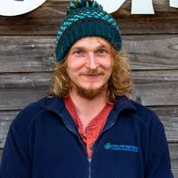

- Each activity is run under the instruction of one of our highly trained staff and all safety equipment is provided. Let’s meet some of the Lochquarry staff:
-
Name: Claire Jack
Position: Centre Manager
Responsible for: The overall running of the centre and all of its activities
Favourite Activity: Pole climb -
Name: Robbie Elliot
Position: Senior Instructor (Land)
Responsible for: Overseeing all of the land based activities
Favourite Activity: Hillwalking in the beautiful Scottish highlands -
Name: Marion Hunter
Position: Centre Administrator
Responsible for: Making bookings and arranging activity slots for groups
Favourite Activity: Making sure everyone has a great time when the visit Lochquarry
- Our activities are very popular with youth groups including Scouts and Guides.